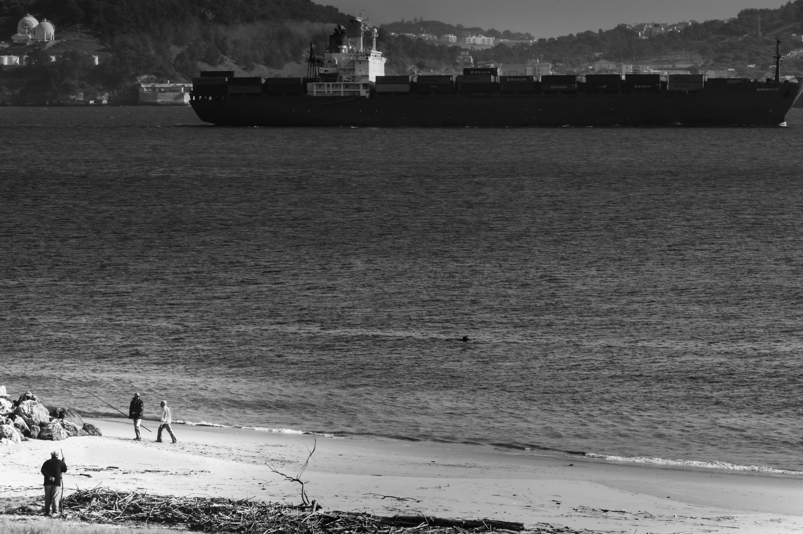
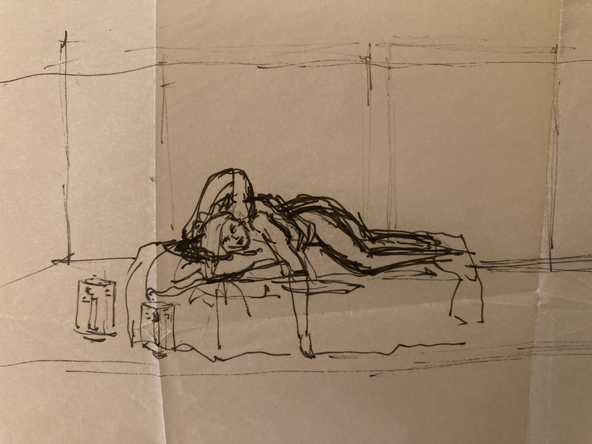
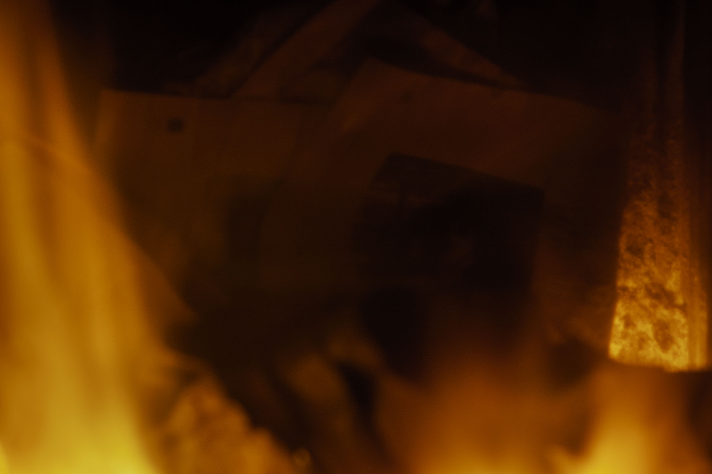
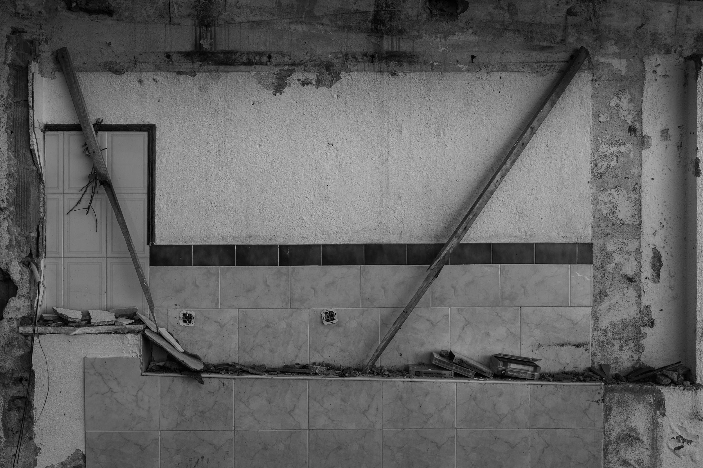
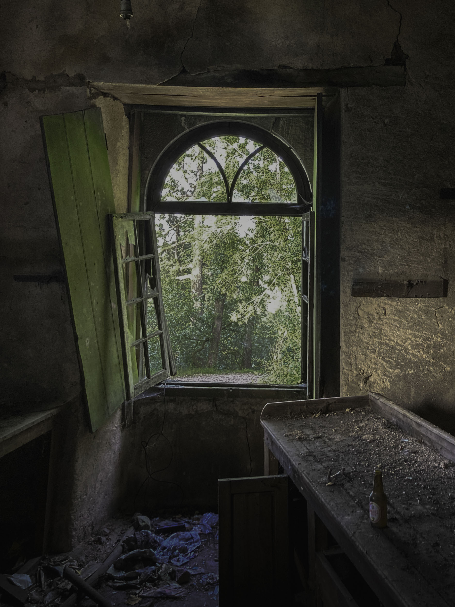

Entre luz, tempo e presença.

Estruturas de Permanência
Arquitetura · Memória · Vestígio

Inside the Sound
Improvisação · Presença

Under the Same Weather
Paisagem · Preto e Branco

O Habitante da Praia
Paisagem · Presença

O que permanece em suspenso
Luz · Transição · Presença

Entre a luz e o resto
Matéria · Dissolução

Superfície em Perda
Tempo · Erosão · Presença

Visto por Ela
um olhar reencontrado
Desenho · Memória · Tempo

Um Acto de Revelação
entre revelação e desaparecimento
Imagem · Transformação · Revelação

Estruturas sem Função
A utilidade desaparece. A forma permanece.
Arquitetura · Memória · Vestígio

Interior com Paisagem
As paredes permanecem. A separação desaparece.
Arquitetura · Paisagem